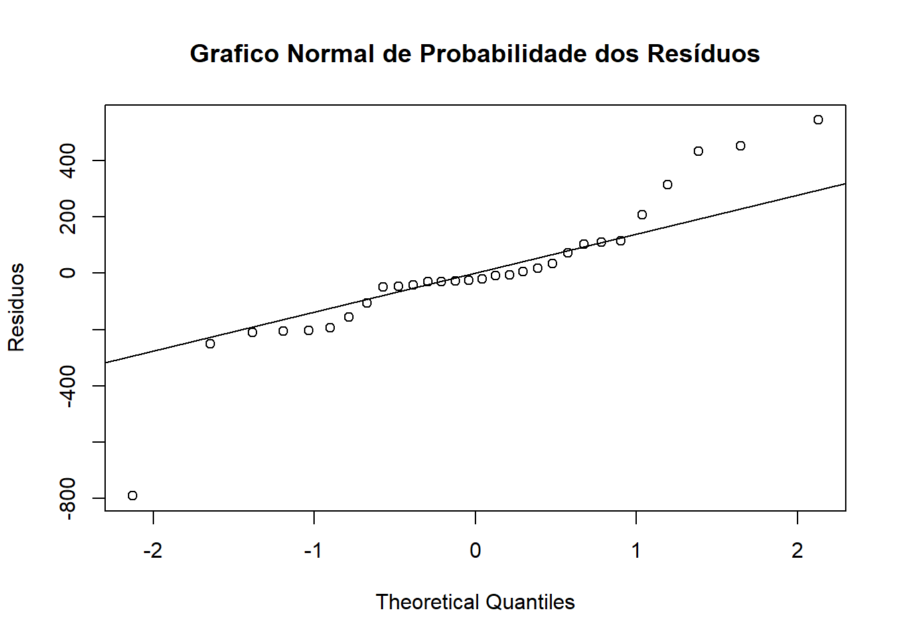
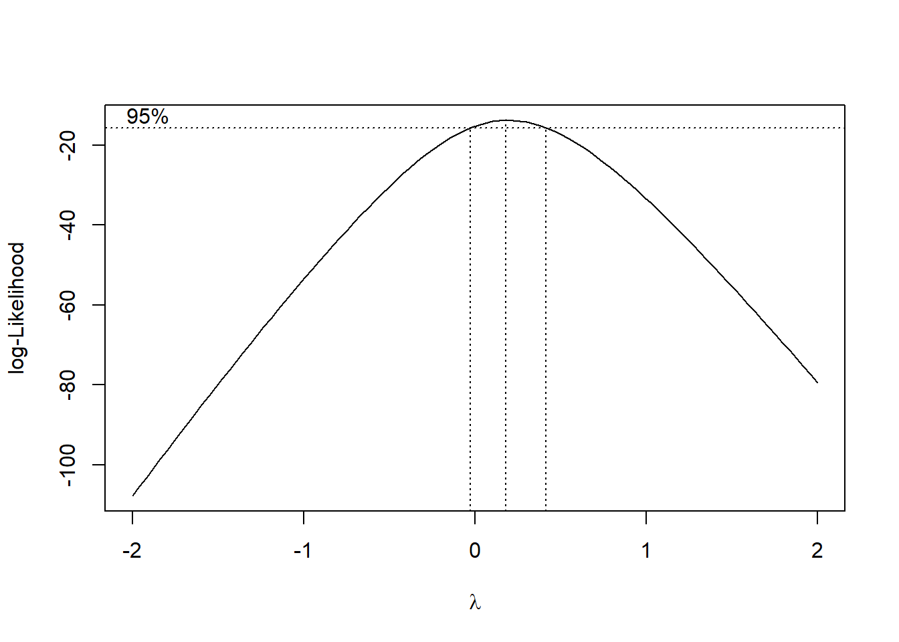
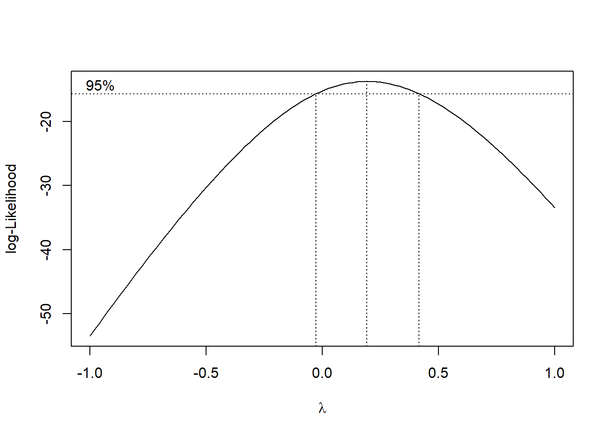
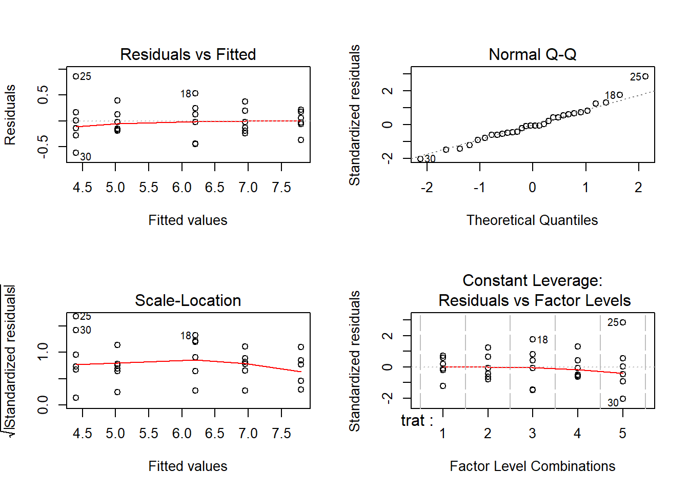

## Call:
## aov(formula = resp ~ trat, data = tr)
##
## Terms:
## trat Residuals
## Sum of Squares 23145259 1768643
## Deg. of Freedom 4 25
##
## Residual standard error: 265.9807
## Estimated effects may be unbalanced## Analysis of Variance Table
##
## Response: resp
## Df Sum Sq Mean Sq F value Pr(>F)
## trat 4 23145259 5786315 81.79 5.505e-14 ***
## Residuals 25 1768643 70746
## ---
## Signif. codes: 0 '***' 0.001 '**' 0.01 '*' 0.05 '.' 0.1 ' ' 1qqnorm(tr.av$res,ylab="Residuos", main=NULL)
qqline(tr.av$res)
title("Grafico Normal de Probabilidade dos Resíduos")
Gráfica mostra uma heterogeneidade de variâncias e QQ-Plot mostra um comportamento dos dados que se afasta muito da distribuição normal. A menssagem é clara, mas testes podem ser feitos para verificar o desvio dos pressupostos.
##
## Bartlett test of homogeneity of variances
##
## data: tr$resp and tr$trat
## Bartlett's K-squared = 29.586, df = 4, p-value = 5.942e-06##
## Shapiro-Wilk normality test
##
## data: tr.av$res
## W = 0.89608, p-value = 0.006742Nos resultados acima a homogeneidade de variâncias foi rejeitada e também a normalidade dos resíduos.
## Loading required package: MASS

O gráfico mostra que o valor que maximiza a função é aproximadamente \(\hat{\lambda} = 0.19\). Abaixo, uma forma de se obter o valor exato de \(\hat{\lambda}\).
## [1] 0.1919192Desta forma o próximo passo é obter os dados transformados e depois realizar as análises utilizando estes novos dados.
Note que os resíduos tem um comportamento bem melhor do que o observado para os dados originais. A análise deve prosseguir utilizando-se então os dados transformados.
##
## Bartlett test of homogeneity of variances
##
## data: tr$respt and tr$trat
## Bartlett's K-squared = 2.7846, df = 4, p-value = 0.5945##
## Shapiro-Wilk normality test
##
## data: tr.avt$res
## W = 0.97207, p-value = 0.5972NOTA: No gráfico da verossimilhança perfilhada notamos que é mostrado um intervalo de confiança para \(\lambda\) e que o valor \(0\) está contido neste intervalo. Isto indica que podemos utilizar a transformação logarítimica dos dados e os resultados serão bem próximos dos obtidos com a transformação previamente adotada.
## Df Sum Sq Mean Sq F value Pr(>F)
## trat 4 45.91 11.48 103.9 3.38e-15 ***
## Residuals 25 2.76 0.11
## ---
## Signif. codes: 0 '***' 0.001 '**' 0.01 '*' 0.05 '.' 0.1 ' ' 1